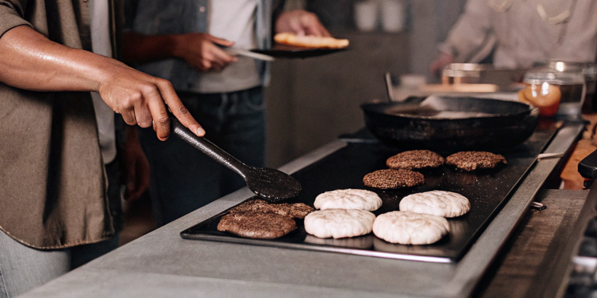
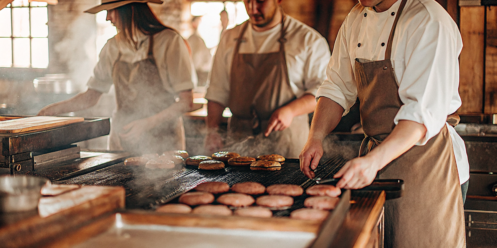
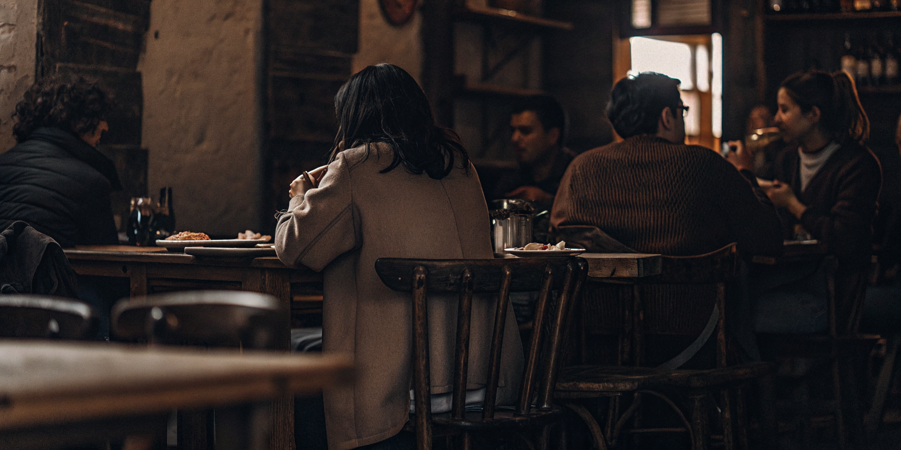

Meet us

In Hambearguesería we do not make hamburgers, we reconstruct Aragon in each eBEARy.
Ingredients of the land, flavors that explode, a trip to Aragon.
So what, you want a hamburger?
OUR HISTORY
Hambearguesería was born in Zaragoza in 2025, when a group of friends who loved good food and Aragon
decided to combine their two passions: burgers and local products.
It all started in a small kitchen, testing recipes until we found the perfect combination. We wanted to
create something different, burgers where every ingredient told a story of our land.

From a modest place, we became known for capturing the essence of Aragon in every detail, from the names
of our burgers to the decoration.
Today we maintain that same spirit: same recipes, same suppliers and
the same love for sharing the best of our land.
